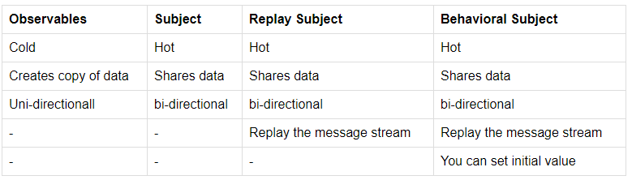

subject-behaviour works!
BehaviorSubject is a type of subject, a subject is a special type of observable so you can subscribe to messages like any other observable. The unique features of BehaviorSubject are: It needs an initial value as it must always return a value on subscription even if it hasn't received a next() Upon subscription, it returns the last value of the subject. A regular observable only triggers when it receives an onnext at any point, you can retrieve the last value of the subject in a non-observable code using the getValue() method. Unique features of a subject compared to an observable are: It is an observer in addition to being an observable so you can also send values to a subject in addition to subscribing to it. In addition, you can get an observable from behavior subject using the asObservable() method on BehaviorSubject. Observable is a Generic, and BehaviorSubject is technically a sub-type of Observable because BehaviorSubject is an observable with specific qualities. An observable can be created from both Subject and BehaviorSubject using subject.asObservable(). The only difference being you can't send values to an observable using next() method. In Angular services, I would use BehaviorSubject for a data service as an angular service often initializes before component and behavior subject ensures that the component consuming the service receives the last updated data even if there are no new updates since the component's subscription to this data. ------------------------------------------------------------ 73 Observable and subject both are observable's means an observer can track them. but both of them have some unique characteristics. Further there are total 3 type of subjects each of them again have unique characteristics. lets try to to understand each of them. you can find the practical example here on stackblitz. (You need to check the console to see the actual output)  Observables They are cold: Code gets executed when they have at least a single observer. Creates copy of data: Observable creates copy of data for each observer. Uni-directional: Observer can not assign value to observable(origin/master). Subject They are hot: code gets executed and value gets broadcast even if there is no observer. Shares data: Same data get shared between all observers. bi-directional: Observer can assign value to observable(origin/master). If are using using subject then you miss all the values that are broadcast before creation of observer. So here comes Replay Subject ReplaySubject They are hot: code gets executed and value get broadcast even if there is no observer. Shares data: Same data get shared between all observers. bi-directional: Observer can assign value to observable(origin/master). plus Replay the message stream: No matter when you subscribe the replay subject you will receive all the broadcasted messages. In subject and replay subject you can not set the initial value to observable. So here comes Behavioral Subject BehaviorSubject They are hot: code gets executed and value get broadcast even if there is no observer. Shares data: Same data get shared between all observers. bi-directional: Observer can assign value to observable(origin/master). plus Replay the message stream: No matter when you subscribe the replay subject you will receive all the broadcasted messages. You can set initial value: You can initialize the observable with default value.